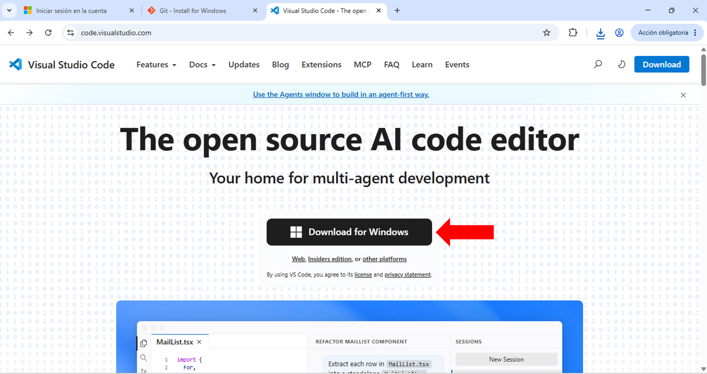
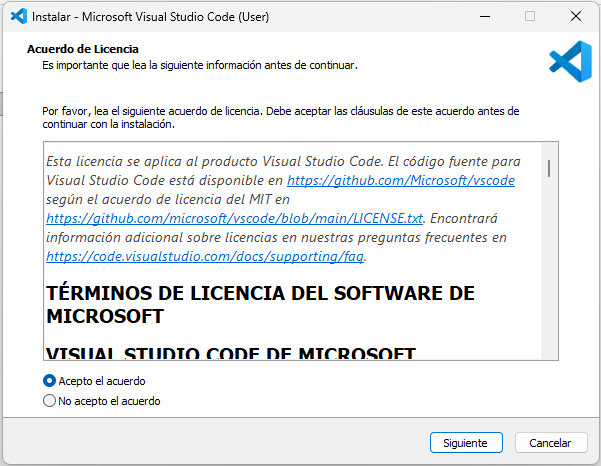
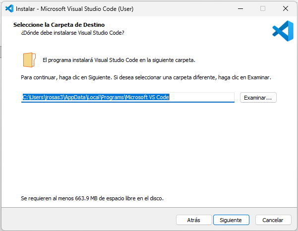
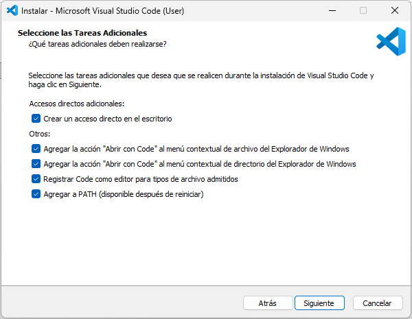
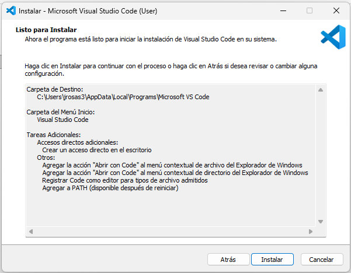
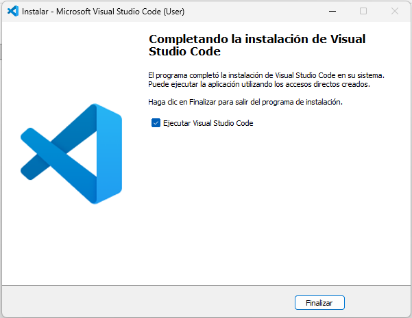
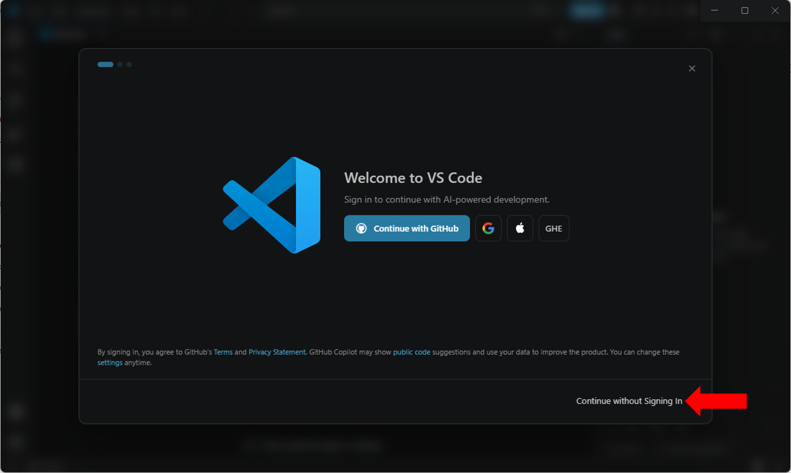
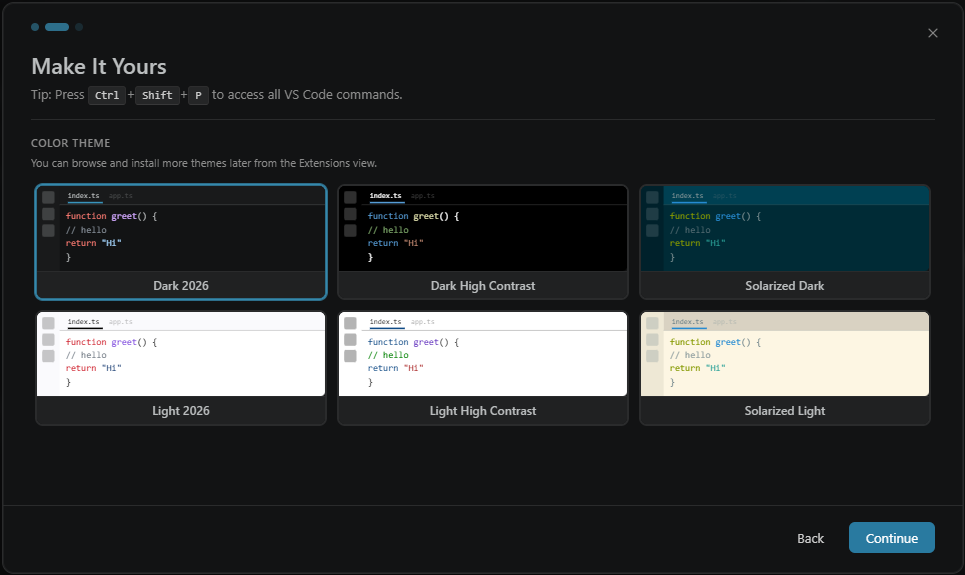
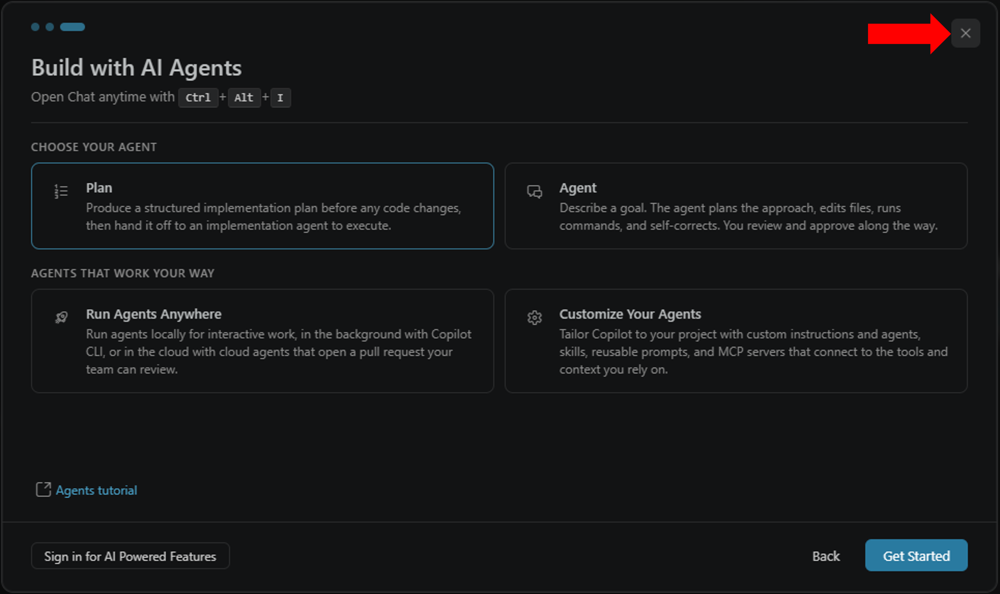

Pasos de instalación
01 Descarga
Para descargar Visual Studio Code (VSCode) se debe acceder a su pagina oficial y dar click al botón indicado en Figura 1. Después de esto la descarga del instalador empezará automáticamente.

02 Instalación
Una vez descargado el instalador, lo siguiente es darle doble click para ejecutarlo y realizar los siguientes pasos en cada una de las pantallas que se nos presentan.
Acuerdos de licencia
La primera pantalla nos muestran los acuerdos de licencia de VSCode. Una vez los haya leído responsable y diligentemente puede seleccionar Acepto el acuerdo y dar click a "Siguiente".

Carpeta de destino
En esta pantalla se nos pide que indiquemos la ruta en la que se va a guardar el programa. Si la ruta que aparece por defecto es parecida a la que se muestra en Figura 3 no hay cambiarla. Es decir la estructura de la ruta debe ser: C:\Users\<INTRODUCIR USUARIO DE RED>\AppData\Local\Programs\Microsoft VS Code .
De no ser así, hay que introducir en el campo de texto proporcionado la ruta indicada anteriormente cambiando la sección <INTRODUCIR USUARIO DE RED> por el usuario de red del equipo. Una vez verificada la ruta damos click en "Siguiente".

Carpeta de menu de inicio
En esta pantalla se nos pregunta bajo cual carpeta se va a agregar el programa en el menu de inicio de windows. Solo se debe presionar "Siguiente" sin cambiar nada.
Opciones adicionales
En esta pantalla se nos pide seleccionar las opciones adicionales que queremos configurar en VSCode. Se deben marcar las mismas que se muestran en Figura 5 y posteriormente dar click en "Siguiente"

Resumen de configuraciones
En esta pantalla se nos muestra un resumen con las configuraciones seleccionadas para la instalación. Le damos click en "Instalar".

Pantalla final
Después de presionar "Instalar" se empezará a instalar VSCode según las configuraciones seleccionadas. El avance va a ser indicado por una barra de progreso y cuando esta llegue al final se mostrara la pantalla mostrada a continuación. Aquí solo debemos marcar la casilla Ejecutar Visual Studio Code presionar "Finalizar".

Primeros pasos
Bienvenida
La primera vez que se ejecuta VSCode, se nos recibe con una pantalla de bienvenida en la que se nos solicita iniciar sesión. En esta pantalla se debe dar click al botón Continua witouth singing/continuar sin iniciar sesión tal y como se muestra en Figura 8.

Aspectos
Después nos aparecerá una pantalla en donde podremos seleccionar el aspecto del editor de texto de VSCode. En esta se selecciona el aspecto según criterio propio y se da click a "Continue/continuar"

Agentes de IA
En la última pantalla aparecen varias opciones para la configuración de agentes de IA. De aquí en adelante se puede simplemente cerrar la ventana y continuar al editor de VSCode.

Con esto concluimos con la instalación de VSCode.
| ¡Felicidades, ya puedes empezar a probar las características del editor! |